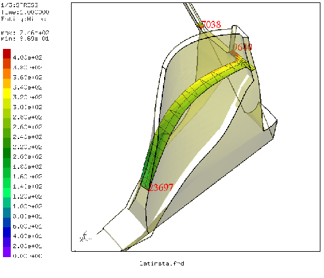

Next: qdel Up: Commands Previous: qcnt Contents
'qcut' RETURN 'w'|'q'|'n'|'p'|'u'|'v'|'x'|'y'|'z'|'s'This keyword is used to define a cutting plane trough elements to visualize internal results (see figure 5). New elements are generated and stored in the set “-qcut” for this purpose. The plane is defined either by picking three nodes (select with key “n”) or points (select with key “p”), or by just one node plus either a successive “v”-keystroke in case a dataset-entity of a vector was already selected or just an “x”-,”y”- or “z”-keystroke without pressing 'n' before. The cutting plane is then determined normal to the vector (displacements, worstPS ..) or the given x,y or z direction. Be aware of the key “u” (undo) to return to the un-cutted structure. See also ”cut” for the command-line function. The elements generated by successive qcut or cut add up until they are deleted.
To suppress or enable the immediate ploting of the cut press “s” (switch ploting on/off) before you create the cut. This is necessary if more than one cut should be shown together. So first press key “s” then create all the cuts except the last. Then “s” again and create the last cut.
It is also possible to measure distances between two pixels on the screen. Just press the key ”w” on the positions of the two pixels. The distance is calculated in the scale of the displayed geometry.
 |